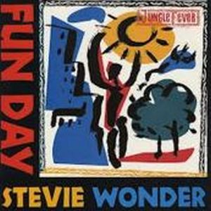
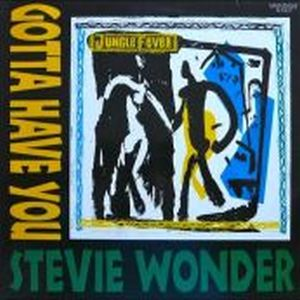
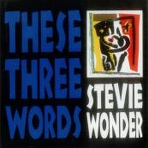

Stevie Wonder, tras un paréntesis sin álbum de 4 años, retorna con una banda sonora para la película de Spike Lee titulada
Jungle Fever. Son once temas, aunque hay una canción, "Feeding Off The Love Of The land", compuesta por Stevie años atrás, en los años 70. Ésta aparece al final de la película en los créditos, y no aparece en el álbum, pero si con el lanzamiento del sencillo llamado "Gotta Have You" y en un álbum de ayuda a los niños huérfanos de Rumanía.
En el disco podemos encontrar participaciones de Syreeta Wright, Keith Washington, Maysa Leak y en especial Kimberly Brewer en la canción "If She Breaks Your Heart". Consigue resultados aceptables en las listas de R&B, a pesar de que aparentemente, no pretendía ser un retorno glorioso en esta nueva década.
  